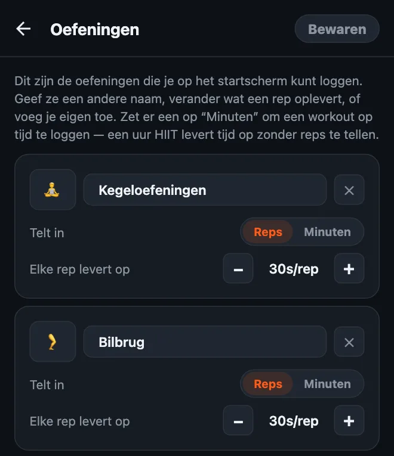
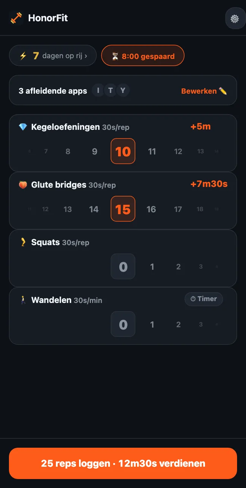

Ontgrendel je telefoon met kegeloefeningen
Hoi allemaal! Ik heb HonorFit gebouwd omdat ik push-ups tussen mij en Instagram wilde, zonder mijn telefoon ergens neer te zetten zodat een camera ze kon tellen (dat bij een tankstation doen was niet mijn beste moment, haha). Jij doet de reps, je logt ze zelf, en je apps gaan van het slot.
Maar push-ups zijn niet voor iedereen. En een van de oefeningen die het allerbest bij dit idee passen, zijn helemaal geen push-ups: het zijn kegeloefeningen en de bilbrug. Hier lees je waarom, en hoe je het instelt.
Waarom kegeloefeningen zo goed passen bij het erewoord-systeem
Niemand ziet een kegeloefening. Niet degene naast je in de bus, niet je collega’s, en al helemaal niet de camera van een telefoon. Een app die reps telt met de camera, kan deze letterlijk niet tellen.
HonorFit probeert dat ook niet. Het werkt op erewoord (Engels): je doet ze, je draait het wiel naar het aantal dat je hebt gedaan, klaar. Zo kun je je TikTok-tijd verdienen in een vergadering, in de rij bij de supermarkt of op de bank, zonder dat iemand er iets van merkt.
En het lost op wat iedereen over kegeloefeningen zegt: ‘Ik weet dat ik ze zou moeten doen, ik vergeet het gewoon.’ Als je een heleboel keer per dag naar je telefoon grijpt (geen oordeel, ik ook), wordt elk van die momenten een herinnering.
De bilbrug is niet onzichtbaar, maar je doet hem makkelijk op de grond of zelfs in bed, je hebt geen spullen nodig, en hij past heel goed bij kegeloefeningen.
Zo stel je het in
Vanaf versie 1.15.0 is dit gratis: je kunt zonder Pro tot 3 eigen oefeningen toevoegen, en Kegeloefeningen en Glute bridges (de bilbrug) zijn allebei suggesties die je met één tik toevoegt. (Pro, in de VS $3 per maand of eenmalig $19,99, maakt het onbeperkt.) Zo doe je het:
- Tik op het startscherm op het tandwiel en daarna op de kaart Oefeningen.
- Tik op de suggestie Kegeloefeningen en daarna op Glute bridges. Je hoeft niks te typen, en ze hebben hun eigen emoji: 💎 voor kegeloefeningen en, jawel, 🍑 voor de bilbrug. Hernoemen kan natuurlijk nog steeds.
- Stel Elke rep levert op in met de −/+-knoppen (mijn suggesties staan hieronder).
- Verwijder de oefeningen die je niet gebruikt met het ✕ (optrekken misschien?) en tik op Bewaren.

De volledige uitleg van de editor, inclusief workouts op tijd, staat in zo pas je je oefeningen aan in HonorFit.
Hoeveel schermtijd moet elke rep opleveren?
Hiermee zou ik beginnen:
| Oefening | Elke rep levert op | Een gewone set levert op |
|---|---|---|
| 💎 Kegeloefeningen | 30 seconden | 10 kegeloefeningen = 5 minuten |
| 🍑 Bilbrug | 30 seconden | 15 bilbruggen = 7m30s |
| 🚶 Wandelen (op tijd) | 30 seconden per minuut | 20 minuten wandelen = 10 minuten |
Een set van 10 kegeloefeningen plus 15 bilbruggen levert je dus zo’n twaalf en een halve minuut op. Pas het vanaf daar aan. Is het te makkelijk om tijd te verzamelen, verlaag dan de waarden. Betrap je jezelf erop dat je reps logt die je niet hebt gedaan, dan is de prijs te hoog, dus verlaag hem.

Eén ding over kegeloefeningen: meer is niet beter. Gezondheidssites als MedlinePlus en Cleveland Clinic (allebei Engels) hebben het meestal over sets van ongeveer 10, een paar keer per dag, en zeggen dat te veel ervan de spieren te gespannen kan maken. Maak er dus alsjeblieft geen 100 kegeloefeningen voor een uur YouTube van! Daarom zou ik ze een flinke waarde per rep geven en de bilbrug, squats of een wandeling het grotere werk laten doen.
De basisbewegingen
Ik ben app-ontwikkelaar, geen trainer of fysiotherapeut, dus dit is alleen het algemene idee. De links hierboven hebben echte instructies.
- Kegeloefeningen: span de spieren aan die je gebruikt om je plas op te houden, houd dat een paar seconden vast en ontspan dan een paar seconden helemaal. Dat is één rep. Blijf ademen en probeer je buik, bovenbenen of billen niet mee aan te spannen. (Je plas onderbreken is een manier om de spieren één keer te vinden, niet iets om regelmatig te oefenen.)
- Bilbrug: ga op je rug liggen met je knieën gebogen en je voeten plat. Span je bilspieren aan en til je heupen op tot je lichaam een rechte lijn vormt van schouders tot knieën, houd even vast en laat je langzaam weer zakken. Dat is één rep. Sommige mensen doen bovenin graag een kegeloefening erbij.
Ben je zwanger, ben je net bevallen, heb je last van bekkenpijn of doen kegeloefeningen pijn? Overleg dan eerst met je huisarts of een bekkenfysiotherapeut. Die kunnen je vertellen wat goed is voor jouw lichaam, en soms is het antwoord ‘nu even geen kegeloefeningen’. Dat is prima. Je kunt HonorFit dan instellen met wat zij je in plaats daarvan aanraden.
Een paar tips
- Houd het bij drie of vier oefeningen. Bijvoorbeeld Kegeloefeningen, Bilbrug, Squats en Wandelen: dan heb je zitten, liggen en onderweg zijn gedekt. Elke oefening krijgt een eigen wiel, dus minder is makkelijker.
- Gebruik een workout op tijd voor de dagen dat je eropuit gaat. Zet een oefening op Minuten (of tik op de suggestie Wandelen of Yoga), zodat een wandeling of een les ook tijd oplevert.
- Bewaarde routines (Pro, aanzetten in Instellingen) laten je tot 3 rep-combinaties bewaren, zoals ‘10 kegeloefeningen + 15 bilbruggen’, en er met één tik een toepassen.
- Blokkeer één of twee apps, niet alles. Gewoon die ene die je avonden opslokt.
Zijn kegeloefeningen ook niks voor jou? Ik heb ook wat rustige oefeningen die je zelfs aan je bureau kunt doen op een rij gezet.
HonorFit Blocker is een gratis app blocker voor iPhone en Android. Op erewoord, geen camera, en er gaat niks van je telefoon af. Kegeloefeningen, bilbruggen en tot 3 eigen oefeningen zijn gratis. Misschien vinden sommigen van jullie het wel leuk!